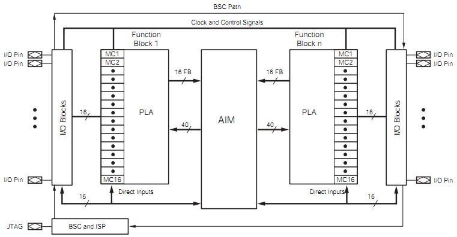
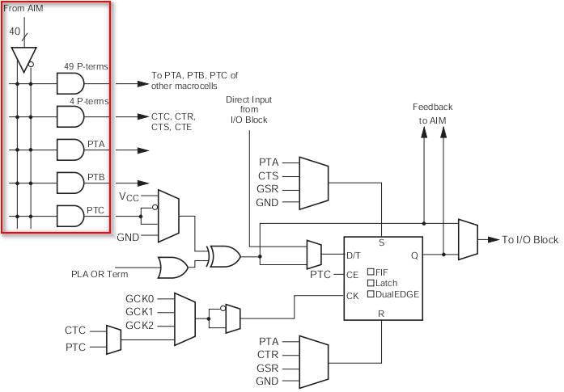
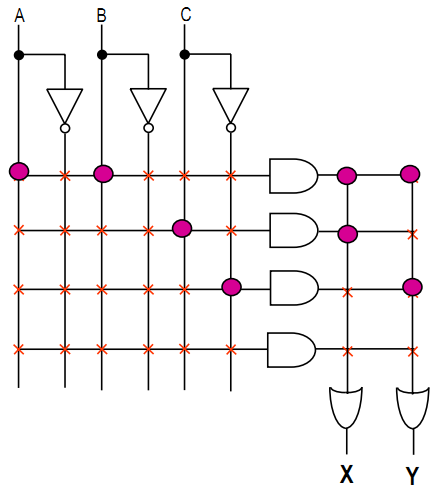
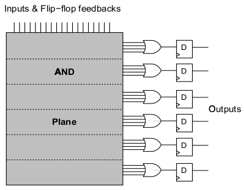

CPLD内部结构¶
前面简单介绍了一下XC9500XL的Jtag结构，为了方便后续的CPLD在线配置， 有必要了解CPLD的内部实现机制。因为Xilinx并没有完全公开内部的实现， 所以以下的结构有部分是猜测。
我们来看看最新的CoolRunner-II系列。
这个是整体的系统结构图 [1] :
可以看到有这么几大块：
- BSC and ISP 是调试和在线配置模块
- I/O Blocks 是IO模块
- FBs 是Function Blocks（功能模块），其中包含两个子模块：
- MC1到MC16 是16个Macrocell（宏单元），包含触发器和一些基本的门
- PLA 是Programable Logic Array（就是以前常说的乘积项整列），用于实现AND逻辑，并给出可组合的OR逻辑整列
- AIM 全称Advanced Interconnect Matrix（高级互联矩阵），用于各个Function Blocks的互联
FBs¶
FB是CPLD可编程的基础，从AIM给到PLA的信号有40路，每一路信号在内部使用的时候做了预处理， 包含原始信号和反向信号，这样可以很方便的使用信号。 虽然这种设计看似多了很多反相器，比较浪费，但这么一来就没必要用单独的Macrocell来做反向了。 其实资源利用率还是很高的。

PLA¶
PLA生成的乘积项会通过“线或”整列给到Macrocell。 看看PLA和一个宏单元的内部，红框是PLA，其它部分是Macrocell。 每个FB的PLA可以给出的信号共有56路（可以用作PTA、PTB、PTC或CTC、CTR、CTS、CTE）。
从Xilinx的技术介绍里可以找到这幅图 [2]
从AIM给的信号有A、B、C，红点是配置成短路，X是断路。 这幅图为了便于说明可编程节点的功能，省掉了一些细节。 表达式 Y = A&B|C，X = A&B|!C，这里的X、Y可以是给到Macrocell的信号。 由于这里可以服用A&B的结果，所以节约了资源。
这里附上以前的旧器件PAL就容易理解了 [3] ：
只要接触过三极管的集电极开路（OC）、场效应管漏极开路（OD）实现的线与、线或逻辑 就容易理解上面这些“可编程节点”。 两个OC门并联、并添加上拉电阻就可以实现“线与”的功能， “线或”可以在“线与”的基础上添加反相器得到。
Footnotes
| [1] | ds090 : CoolRunner-II CPLD Family, page 4 |
| [2] | xilinx CoolRunner-II Technology & Architecture, page 22 |
| [3] | Architecture of FPGAs and CPLDs: A Tutorial, page 5 |